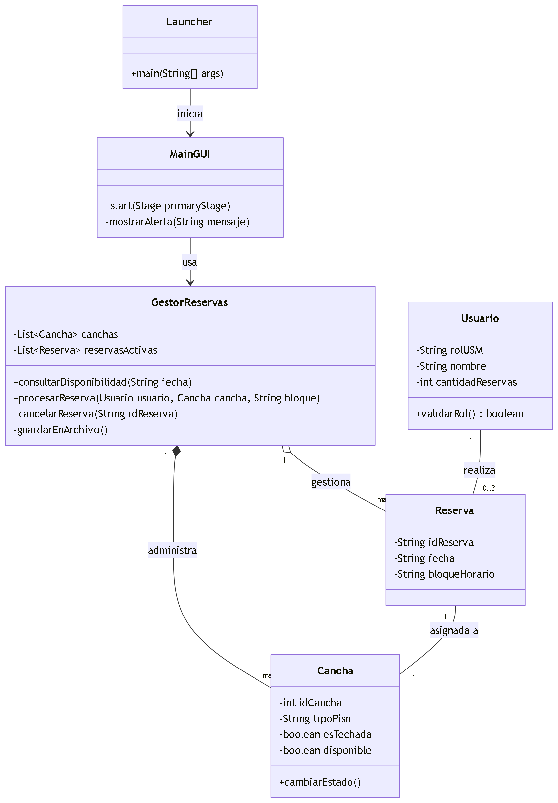
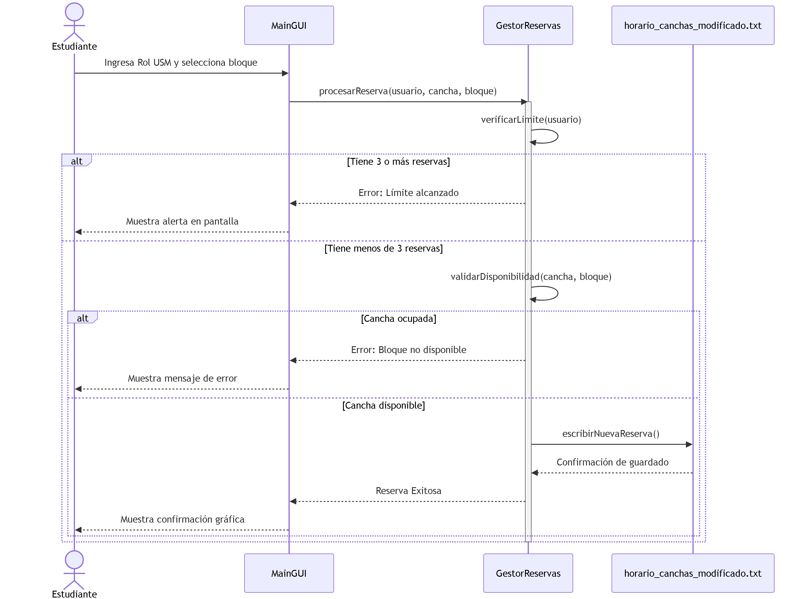
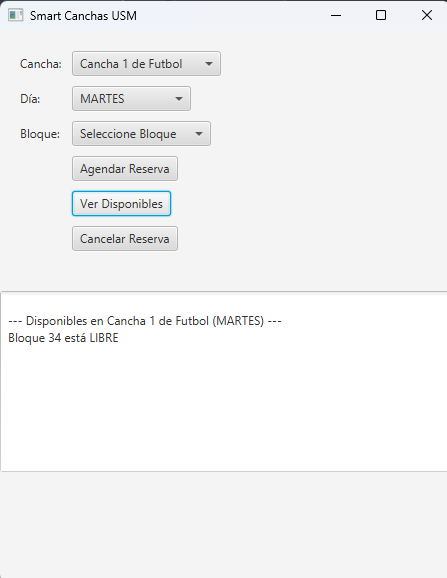
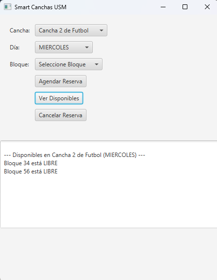
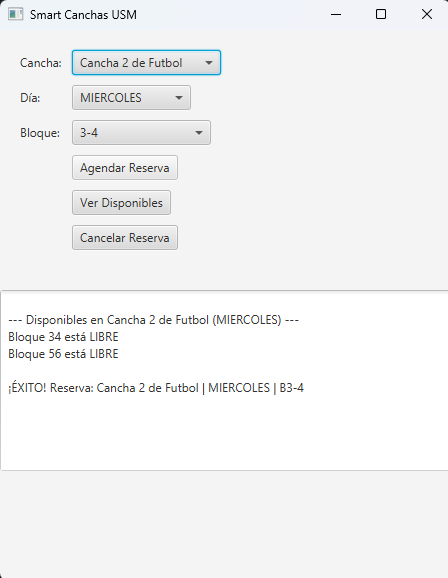
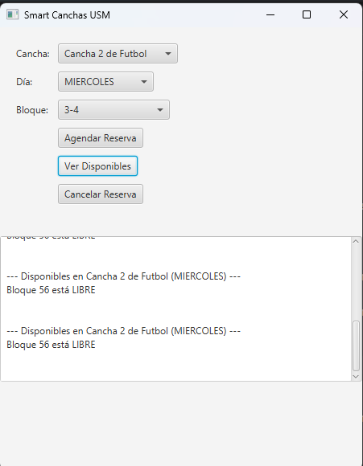
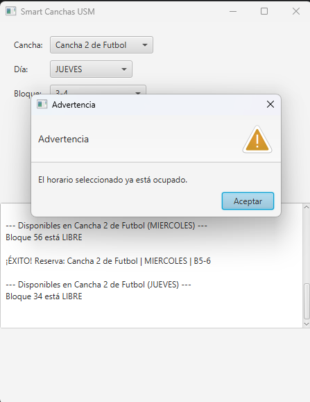
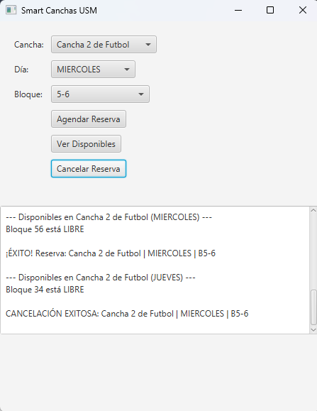
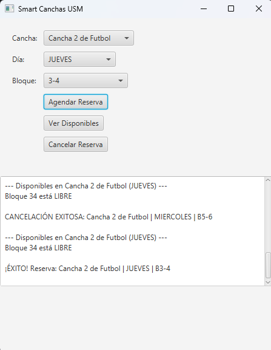
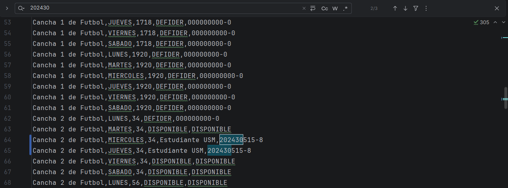

Actualmente, la gestión de los recintos deportivos en la universidad se realiza mediante hojas de cálculo, un método manual que carece de control de concurrencia y visibilidad en tiempo real. Esto genera conflictos de agenda, errores en la asignación y una alta carga administrativa. Nuestro proyecto resuelve esta necesidad implementando un sistema inteligente orientado a objetos (Smart Canchas USM) que automatiza el flujo de reservas, garantizando la integridad de los datos y proporcionando una interfaz gráfica eficiente para un acceso equitativo.
El problema se sitúa en el contexto universitario, específicamente en la administración de la infraestructura deportiva. El sistema actual centralizado en Excel es precario al no validar automáticamente la disponibilidad, permitiendo que dos personas reserven la misma cancha a la misma hora.
Para modelar y dar solución a esto, se definieron los siguientes entes o elementos principales que interactúan en el sistema: Cancha (con atributos como tipo de piso o si es techada), Reserva, Cliente (Estudiante validado por Rol USM) y ComplejoDeportivo. El sistema interactúa con el medio externo a través de una interfaz gráfica (desarrollada en JavaFX) y asegura la persistencia de datos leyendo y escribiendo en un archivo de texto plano (horario_canchas_modificado.txt), lo que permite manejar la concurrencia y evaluar la disponibilidad en tiempo real aplicando los principios de encapsulamiento y modularidad.
El sistema cuenta con validación de formato para el Rol USM y una regla de negocio que limita a 3 las reservas activas por usuario. A continuación se presentan los tres casos de uso principales:
| ID | Caso de Uso | Descripción / Flujo Principal |
|---|---|---|
| CU-01 | Consultar Disponibilidad | El estudiante accede al sistema y visualiza en tiempo real los bloques horarios disponibles para los distintos recintos deportivos, filtrando según el estado actual de las canchas. |
| CU-02 | Realizar Reserva | El estudiante selecciona un bloque disponible y confirma su reserva. El sistema valida el control de concurrencia y que el estudiante no exceda el límite de 3 reservas activas. Si es exitoso, los datos persisten automáticamente en el archivo. |
| CU-03 | Cancelar Reserva | El estudiante visualiza sus reservas activas y selecciona una para anularla. El sistema libera el bloque horario de la cancha seleccionada, dejándola disponible inmediatamente para el resto de la comunidad universitaria. |
El siguiente diagrama ilustra la arquitectura de nuestra solución orientada a objetos. Se observa cómo las entidades principales (Cliente, Cancha, Reserva) se relacionan y encapsulan sus atributos y métodos, separando la lógica de negocio de la interfaz gráfica implementada en JavaFX.

A continuación se detalla la interacción de los objetos a lo largo del tiempo para el Caso de Uso de Realizar Reserva, mostrando la validación de concurrencia y el límite de reservas por usuario.

A continuación se presentan las capturas de pantalla de las pruebas funcionales para los tres casos de uso definidos, validando la correcta comunicación entre la interfaz gráfica y la persistencia de datos:
Caso 1: Disponibilidad de canchas para agendar







Launcher como envoltorio para inicializar el entorno gráfico y evitar errores de configuración de módulos. Es por eso mismo que, para compilar y utilizar la interfaz gráfica desarrollada en JavaFX, solo se debe compilar el archivo Launcher.java.horario_canchas_modificado.txt no lanzara excepciones de "Archivo no encontrado" en diferentes computadoras. Se resolvió manejando adecuadamente las rutas relativas en la raíz del proyecto..iml), directorios compilados (out) y enfocarnos solo en la carpeta src y el archivo Makefile.El proyecto completo, incluyendo el código fuente desarrollado en Java, el archivo README y la configuración del IDE se encuentra disponible de forma pública:
Repositorio GitHub: https://github.com/VicenteASA/ELO329---Proyecto-Reservas_Deportivas
El Video de Presentación del proyecto está subido en la plataforma YouTube. Se incluye el link directo:
Video de Presentación: Haz clic aquí para ver nuestra demostración
Nota: La implementación se documentó directamente en el código fuente. Las instrucciones de ejecución, el archivo base de persistencia y la configuración del JDK/JavaFX están detalladas en la raíz del repositorio. No se incluye código generado (archivos .class).